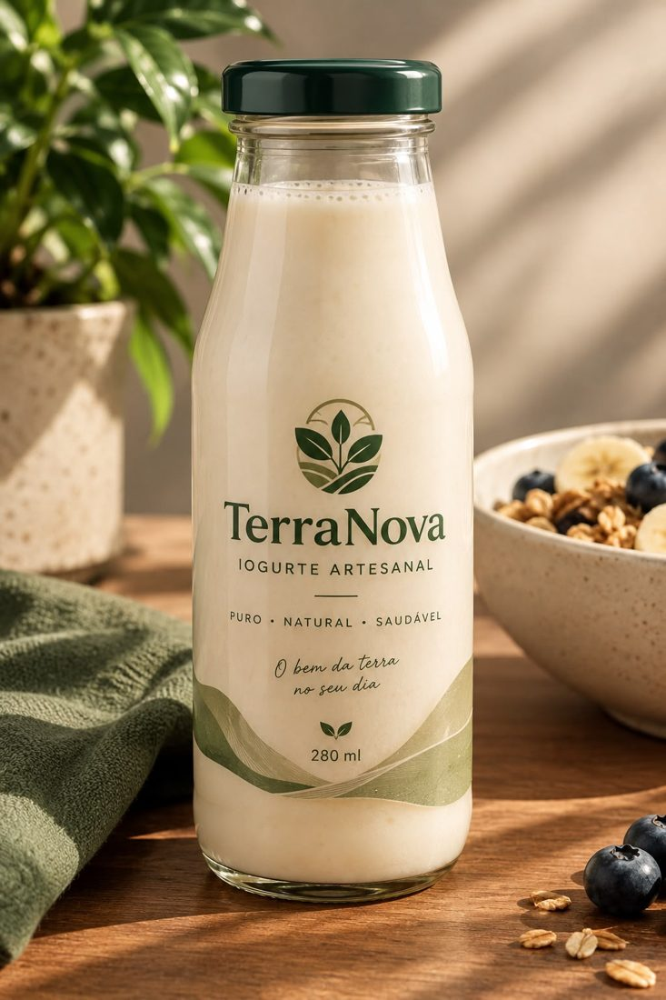

Não passa gosto
O vidro é inerte: não reage com o iogurte e não precisa de verniz ou plástico por dentro. O sabor que sai da fábrica é o que chega ao seu copo.
Iogurte artesanal do
Triângulo Mineiro

Poucos ingredientes. Nada escondido no rótulo. Um iogurte feito em pequenos lotes, sem pressa, para quem quer saber exatamente o que está levando para casa.
NewBrand para TerraNova, 2026
De produtores da região, recebido no mesmo dia.
Não passa gosto e mostra a textura antes de abrir.
As culturas que fazem iogurte do jeito tradicional, com probióticos naturais.
Mínimo de conservantes e estabilizantes. O resto é tempo de fermentação.
O vidro é inerte: não reage com o iogurte e não precisa de verniz ou plástico por dentro. O sabor que sai da fábrica é o que chega ao seu copo.
É uma barreira contra oxigênio e gases de fora, o que ajuda a manter o sabor e as culturas vivas até a última gota.
Textura, cor e consistência à mostra antes de abrir. Sem surpresa dentro da embalagem.
Depois de vazia, a garrafa vira porta-granola, vaso ou pote de overnight oats.
e infinitas vezes, sem perder qualidade.
das embalagens de vidro em 2023, segundo a Abividro. Dá para melhorar.
é a cor do vidro na coleta seletiva (CONAMA 275/2001).
Como descartar: enxágue a garrafa, separe a tampa metálica e coloque o vidro na lixeira verde ou num ponto de entrega voluntária.
Fontes: Abividro via Portal da Indústria (2023) e Resolução CONAMA nº 275/2001.
Três etapas, todas na nossa área própria de produção.
Recebido de produtores do Triângulo Mineiro e pasteurizado logo na chegada.
Lotes pequenos e sem pressa. É o tempo, e não o espessante, que dá a textura.
Fechado na hora e levado refrigerado aos mercados parceiros da região.
Venda seletiva em supermercados de referência e empórios das cidades-polo, ao lado de outros produtos que também falam de bem-estar. Os parceiros de lançamento são o Supermercado LS Guarato, em Uberaba, e o Empório Bahamas, em Uberlândia.
Canal curtoFabricante → Varejista → Consumidor
Todas as versõesR$ 12,99
A análise da NewBrand encontrou um mercado de bem-estar em alta e um público das classes B- e C+ que quer saber o que está comendo. Cada ponto da matriz tem uma resposta no plano: passe o mouse ou toque para ver.
Como o plano usaCinco versões para públicos diferentes, do café da manhã à melhor idade, com poucos ingredientes no rótulo.
Como o plano respondeCanal curto e refrigerado, reposição frequente nas gôndolas e preço premium que sustenta o vidro.
Como o plano usaComunicação do natural com influenciadores locais de saúde e perfis no Instagram e no TikTok.
Como o plano respondeClean label, produção artesanal e distribuição seletiva, só em lojas que já vendem bem-estar.
Produto
5 versões
Diferenciação e extensão de linha: portfólio enxuto, clean label e segmentado.
Preço
R$ 12,99
Premium, um pouco acima dos convencionais, competitivo entre as marcas de bem-estar.
Praça
Seletiva
Supermercados parceiros nas cidades-polo, com a cadeia de frio garantida.
Promoção
Push + Pull
Outdoors, influenciadores e redes geram demanda; degustação e gôndola levam à compra.
Estratégia híbrida: Pull para gerar demanda e Push para levar à primeira compra. Todas as peças seguem o mesmo design simples, que reforça o natural.
Do café da manhã ao pós-treino, da lancheira à melhor idade. A linha inteira lado a lado no mercado, cada uma com a sua cor de tampa.
Cenário simulado de 2027
O monitoramento compara o que foi projetado com o que aconteceu. Mês abaixo da meta vira Stand by, com uma ação corretiva no mesmo mês; dois meses seguidos abaixo, a estratégia é revista.
Fonte: Planejamento de Marketing N2, seção 6 (Monitoramento e controle). Valores simulados para o projeto.
O lançamento começa pelos supermercados de Uberaba, Uberlândia e Araxá. Deixe seu e-mail e avisamos quando a TerraNova chegar perto de você.
Usamos seu e-mail só para avisar do lançamento. Nada de spam.